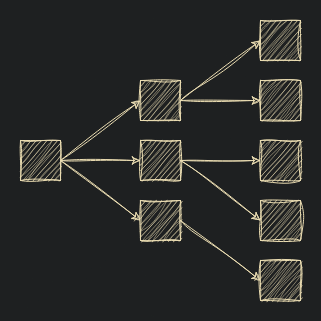

Iedereen heeft wel zijn doelen die hij of zij wilt bereiken. Voor sommigen is dit een concept dat die ergens in zijn heeft bewaard, anderen noteren dit ergens heel gedetailleerd. Ikzelf ben altijd iemand geweest die redelijk doelloos leefde, maar merkte dat ik hierdoor ook niet veel gedaan kreeg. Ik wou altijd naar het makkelijke grijpen doordat ik nog niet dacht aan morgen, laat staan volgende maand. Enkele jaren geleden ben ik meer willen beginnen bereiken. Op langer termijn willen beginnen denken dan de komende paar uur. Maar toch bleef het moeilijk voor doelen te kunnen stellen. Ik bleef makkelijke & korte dingen doen, maar de taken die ik mijzelf gaf dat niet op één dag lukte werden nog steeds nooit afgewerkt.
Rond deze tijd begon ik meer en meer notities te nemen. In plaats van alles in mijn hoofd te onthouden voor te vergeten, gaf ik de taak van onthouden aan een boekje. Het enige dat ik dan moest onthouden was voor in het boekje te kijken. Dit hielp al heel veel met specifieke taken klaar krijgen, maar het was nog steeds lastig voor grote taken klaar te krijgen. Ik wist niet waar ik moest beginnen of verloor de motivatie om er aan verder te blijven werken. Dit was omdat ik nog steeds niet op lang termijn kon denken/visualiseren. Hiervoor heb ik een "doelen systeem" gemaakt dat nu al een tijd gebruikt wordt.
In het volgende systeem kan ik grote taken/doelen opsplitsen zonder het overzicht ervan te verliezen. Het is een heel algemeen systeem omdat ik zelf gemerkt heb dat iedereen zijn eigen methodes moet creëren. Voor sommigen werken heel complexe systemen, maar voor de meeste moeten deze zo simpel mogelijk zijn.
Doelen bestaan in verschillende "smaken". Ikzelf splits ze op in 2 varianten. Brede doelen en specifieke doelen. Deze spreken wat voor zichzelf vind ik.
Brede doelen zijn bedoeld voor een overzicht te kunnen krijgen van wat je op langer termijn wilt bereiken. Doelen kunnen gevonden worden door vragen zoals;
Wat wil ik doen?
Wat wil ik van resultaat?
Wat wil ik deze week bereiken?
Deze zijn belangrijk voor het grote beeld niet te verliezen, motivatie te geven door deze doelen te herlezen en te weten waar je naartoe wilt.
Specifieke doelen zijn bedoeld voor een overzicht te hebben van exacte taken die uitgevoerd moeten worden. Dit kan zo simpel zijn als "mijn kamer opruimen" of een onderdeel zijn van een breed doel.
Neem bijvoorbeeld het doel "Ik wil een goede job vinden waar ik gelukkig mee ben." Dit is iets enorm breed, wat het heel lastig maakt voor te weten waar mee te beginnen. Hiervoor kan het specifieke doel "Ik wil uitzoeken welke van mij hobbies het realistischte is voor een job van te kunnen maken." handig zijn. Dit ondersteunt het brede doel maar geeft een meer concretere stap voor dit doel te bereiken. Deze kan dan nog eens worden opgesplitst in nog specifiekere stappen; "Bekijk wat ik met hobby A zou kunnen doen."
Bij elk breed doel horen dus meerdere specifieke doelen, en deze kunnen dus zijn eigen specifiekere doelen krijgen. Op deze manier maak je een duidelijk stappenplan zonder het algemene beeld te verliezen.
Als je dit zou visualiseren zou dit bijna op een mind map beginnen lijken.
Een van de belangrijkste dingen voor te doen is de doelen regelmatig te herlezen. Dit deed ik niet genoeg waardoor ik nooit de motivatie had om deze klaar te krijgen.
Het systeem dat ik hiervoor gebruik probeer ik zo simpel mogelijk te houden. Ik heb mijn doelen in 4 lagen opgesplitst die gelinkt zijn aan tijd.
Elke stap lager begint meer en meer op een todo list te lijken. Bij elke stap schrijf ik er minimum 3 op. Als het er te veel zouden worden dan kan je makkelijk overspoelt worden.
Dit systeem wordt hand in hand gebruikt met mijn notitie systeem. Mijn lang termijn doelen bekijk ik regelmatig voor niet te vergeten waar ik naartoe wil. Mijn maandelijkse doelen zijn al iets specifieker. Vaak is dit "Werk dit grote ding af". Deze zijn zichtbaar op mijn 'daily notes' zodat ik niet vergeet wat ik wil doen. De laatste dag van de maand bekijk ik of ik alles klaar heb kunnen krijgen. Zo ja, schrap ik deze. Zo nee, bekijk ik of ik deze nog wil doen en verplaats ik die naar de maand erna. Voor het maken van de volgende maan refereer ik naar mijn lange termijn doelen voor specifiekere doelen op te stellen.
Wekelijkse en dagelijkse doelen hebben een gelijkaardig proces. Voor wekelijkse refereer ik naar mijn maandelijkse doelen en schrijf ik specifiekere doelen op zoals; "Maak dit onderdeel van het grote ding af". Elke zondag bekijk ik gedaan heb en doe ik het zelfde proces als de maandelijkse.
Bij de dagelijkse doelen schrijf ik de specifieke taken dat ik die dag wil doen. Ik maak deze meestal in de avond voor de volgende dag nadat ik er op gereflecteerd heb. Een voorbeeld van mijn daily note:
Dit is mijn systeem. Na veel uit te proberen, vaak te complex te willen gaan, ben ik hier op gekomen. Ik raad af voor mijn systeem exact te kopieëren. Probeer meerdere uit, maar start simpel. Het gaat over de inhoud van je doelen, niet over de manier waarop je deze doelen maakt of organiseert!